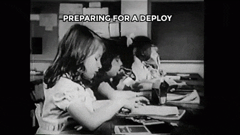

Software Development Life Cycle (SDLC) in GIFs
by Nhori Lopchan Tamang
@lopchannorie
What do I do?


Gathering Requirements & Specs

Design


Development
When coming up with good variables name becomes my number one STRUGGLE.

Ninja-fixing a bug 10 minutes before the demo for client

Working on your code for hours and you finally have time for some interaction
Debugging for hours just to find you're missing right parenthesis

Quality Assurance (QA)

Release/Deploying to Production
#NEEDS


Maintainance
DONE! Ship it!!